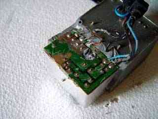
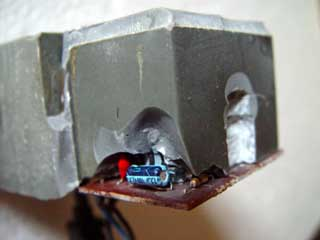
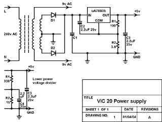

|
|
Vic 20 PSU repair by Lee Davison |
|
DismantlingI'd not long made a new EPROM for my TCP software and was watching ICMP echo requests scrolling up a DOS window in the background while I added some polish to the code comments, when I realised that the lines in the DOS box had all changed to "Request timed out." Bother!. A quick try on Internet Explorer and it became clear that for one reason or another the Vic 20 wasn't responding.
Upstairs in the Laboratory (really - it says so on the door) there was a blank screen and a barely visible power light on the Vic, a quick check with the voltmeter showed that the +5v line was as about 1.1 volts. Switching off I picked up the PSU to find it was too hot to hold for any length of time, looks like I had found what had failed.
Opening the PSU is fairly straightforward, locate the seam at one corner and, using a sharp blade, pry enough of a gap to insert a screwdriver blade. This screwdriver blade can then be tapped along the seam breaking any adhesion as it goes. Repeat this for each side and then the base of the PSU can be pulled free.
Getting the block of resin that encapsulates all the components out was suprisingly easy. All it needed was one sharp impact, open side down, onto a hard surface to break any bond and repeated tapping on each side to persuade it far enough out to hold. Then the top cover was wriggled free leaving the three parts as seen here.
The resin was already cracked in many places and large peices were pulled free by hand before it was needed to use a little more force. The resin covering the PCB was quite thin but had stuck well in places as can be seen by the patches of solder resist that were pulled free with it. It was removed by tapping a sharp blade down the join and then prying the blade up by sliding a screwdriver in between it and the PCB.
With as much as could be easily removed done it was then a case of using a fairly sharp screwdriver as a chisel to remove the remaining resin as far as the PCB edges. This whole process took less than ten minutes.
With the resin now mostly clear it was an easy enough task to desolder the DC wires from the PCB and the AC wires from the transformer. Once the AC wires had been freed from the resin by further carefull use of the screwdriver the whole cable was free. Now the center tapped winding that supplies the DC side was desoldered and the wires pulled free from the holes. The center tap, the two wires twisted together on the right, needed a little more effort as it was also held by the resin beneath the PCB. The component leads that protruded through the board were desoldered and, this done, each was checked to ensure it was free from the board.
With the wires out of the way the screwdriver was again used to clear the resin far enough so that each edge of the PCB could be seen along it's length, also the resin that protruded through the hole in the middle of the PCB was chipped clear. Then a blade was inserted between the top side of the PCB and the resin and the board was eased up using the screwdriver. This making a gap and then widening it, using the knife and then the screwdriver, was repeated until the whole board was free.

Repair Now the board is removed you can see the outlines of the components in the resin. A few prods with a meter later and the whole circuit is sussed, it's a standard five volt regulator with it's ground pin held above ground by connecting it to a voltage divider network. This is much the same scheme that is used by the adjustable regulators to get a voltage other than their fixed 1.25 volts.
Measuring the two resistors in the divider and putting their values into the standard formula for all adjustable regulators gives ..
Vout = Vreg*(R1+R2)/R1 Vout = 5 * (100+3.9)/100 Vout = 5.195v.. which would seem a reasonable value for a logic supply once you take the voltage drop along the cable into account. A quick check of the power dissipated by these resistors reveals that 0.25W is being dissipated by the 100 ohm resistor, a bit much in a supply only rated for 7.5W.
The heatsink was freed from the resin and levered off breaking the regulator. Oops! Not to worry though as this was already broken and had to be replaced. One thing to note is that while it's a standard TO220 case five volt regulator it's the 2A version not the run of the mill 1A. The part number is uA78S05.
The body of the regulator was drilled out using a PCB drill and a sharp 2.5mm HSS drill bit and the two resistors of the voltage divider were drilled and chipped out. While doing this I managed to damage the tantalum capacitor on the output so that came out as well. No problem, I have plenty in the bits box.
The old components removed the PCB drill was pressed into service once more to open up voids in the resin to take the new components, this makes it a lot easier to reassemble later on. In this case also there are some changes, the dropper resistors are both being changed for higher values, which will increase noise on the output a little but reduce power waste. Also the resistor to ground will have a capacitor in parallel, which reduces noise on the output.

You can see these components already fitted on the PCB in the picture, the new values are 330 ohm for R1 and 15 ohm in parallel with 2.2uF for R2. Putting these values into the standard formula for adjustable regulators now gives ..
Vout = Vreg*(R1+R2)/R1 Vout = 5 * (330+15)/330 Vout = 5.227vA replacement regulator was fitted to the heatsink, with heat sink compound, and fitted snugly back in place. Everything was soldered back together, except the lead, and the PSU was powered to test it. The meter read 5.329 volts. Now a 2.2 ohm resistor was soldered across the output and the voltage read again, this time is was 5.317 volts, not bad considering it's drawing 2.4 Amps.
With the test resistor removed and the lead soldered back into place the whole thing was persuaded back into it's box, it's quite a snug fit and the last mm or so took some fairly heavy persuasion. This done the strain relief grommets can be fitted back into their cutouts and the base of the box replaced. Now it's all together again it's time to try it out on the Vic.
Circuit diagramSuccess! The Vic 20 starts up, running my latest webserver ROM, and all looks good. Another quick prod with the meter probes and the five volt supply measures 4.992 volts on the Vic's PCB, close enough to 5.000 so that I won't be worrying.
The diagram, including details of the changes, is here. Some component values are not given as I didn't dig far enough into the resin to find them.
| Last page update: 1st May, 2004. | e-mail me
 |